GOALKEEPERS
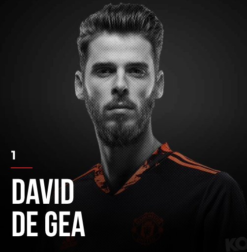
 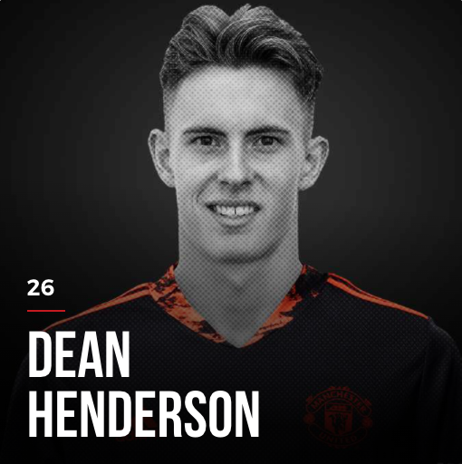
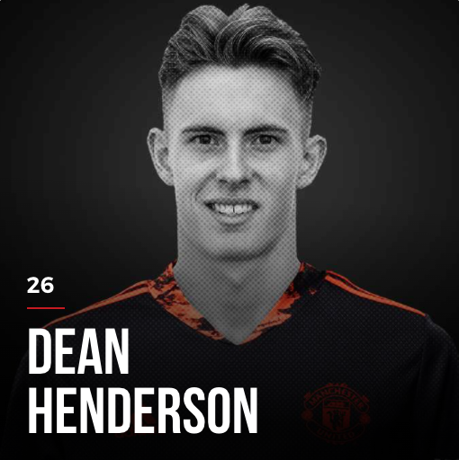
Among these talented goalkeepers, David De Gea has contributed his entire career to Manchester United with almost 11 years at the Old Trafford.
With the fact that De Gea is getting older and older, Dean Henderson is believed to be the next first-choice goalkeeper of the team. However, due to the brilliance of De Gea and his great form recently, Henderson has been kept on bench most of the time and is seeking a chance to play more, even on loan or complete transfer.
Lee Grant and Tom Heaton are most of the time on bench. They are currently working on getting trainer's license to beomce goalkeeper coach and trainer.
DEFENDERS


 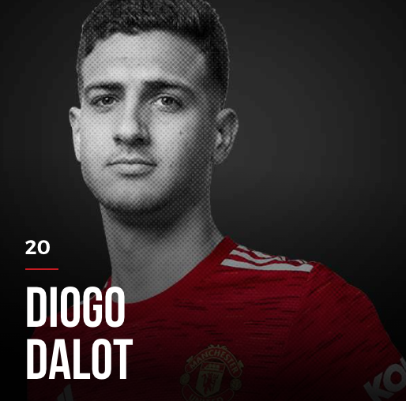
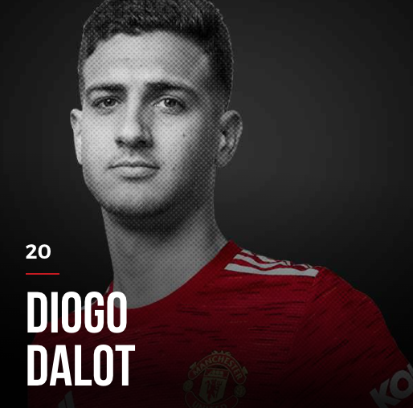


 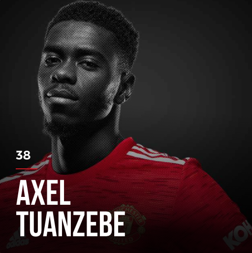
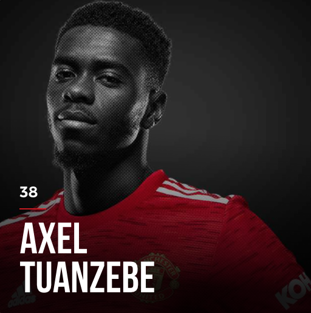

Harry Maguire is the current captain of Manchester United. He is one of the most expensive players at Manchester United with GPB 80 million from Leicester, only after Paul Pogba for GPB 90 million from Juventus. However, his recent form is making the club supporters outraged, and want to take off his captain band.
Phil Jones and Eric Bailley is prone to injuries, and frequently miss half of the season every year. They are loved by the supporters for their aggressive play style and give it all in every match. But it is really a disappointment since they cannot contribute much to the team with high salaries, the supporters believe.
MIDFIELDERS


 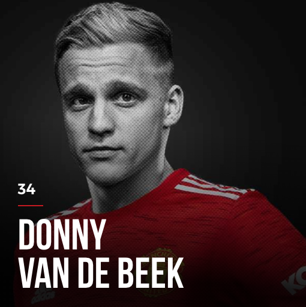
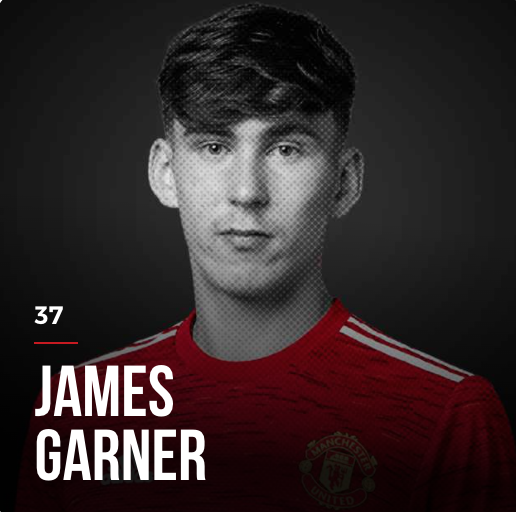
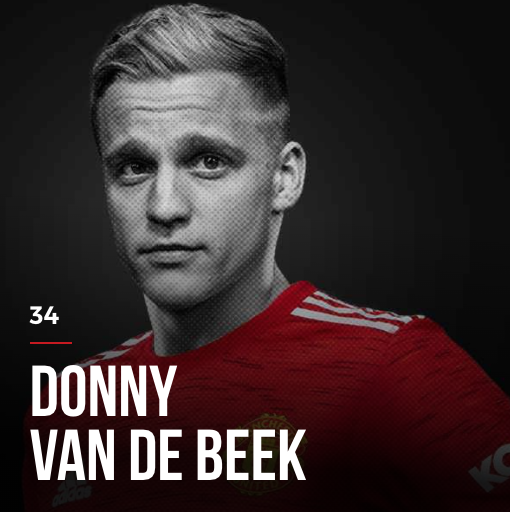
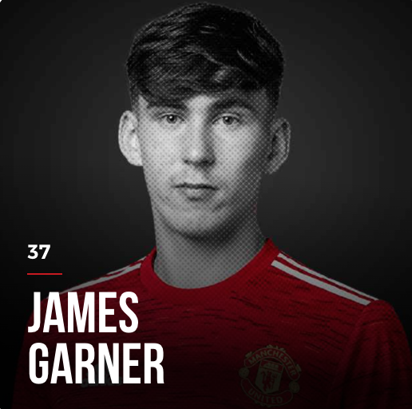
 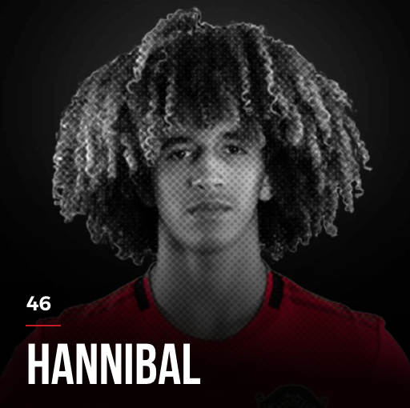
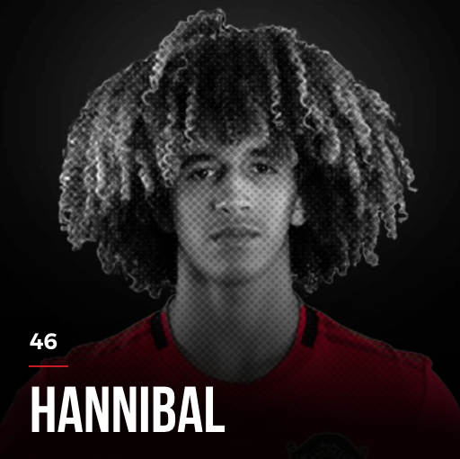
Paul Pogba is the only person in the squad who won the World Cup (2018) with France. However, since his representative Mino Raiola keeps talking rubbish about Manchester United and Pogba does not event attempt to silence, the French player is totally not loved by the supporters at all.
Scott McTominay is usually called "Mad Dog" for his passionate and chaotic style of play. However, his ball pass skills are quite underaverage, and the supporters expect much more from a homegrown like him.
The supporters are looking forward to the future, Hannibal and James Garner. These young talents are famous for great ball pass skills as a midfielder, and believed to be able to replace Paul Pogba when he leaves the club in June 2022.
FORWARDS


 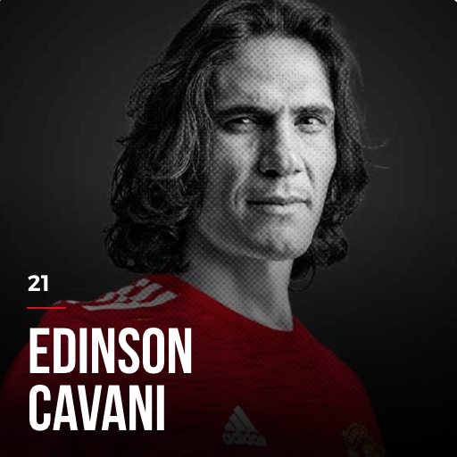
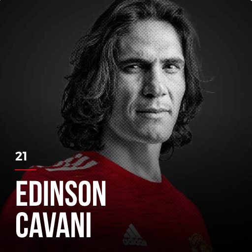


Cristiano Ronaldo is one of the greatest-of-all-time soccer players. He has won 5 Ballon d'Ors and is the top scorer of all time with 803 goals in his entire career, and used to play for Manchester Untied from 2003-2009. Welcome back, the Magnificient Seven!
Marcus Rashford has been awarded MBE title by Queen Elizabeth II after contributions to stop famine among poor children in England. However, since his current form is quite unsatisfactory, the supporters are complaining that he does charity even more than focuses on his own career.
Mason Greenwood is currently a golden boy of Manchester United for the ability to score many goals as a teenager. However, with his currently being accused of sexual assaults and death threats against his girlfiend, he has been suspended by the club and also his sponsors such as Nike and FIFA Online.